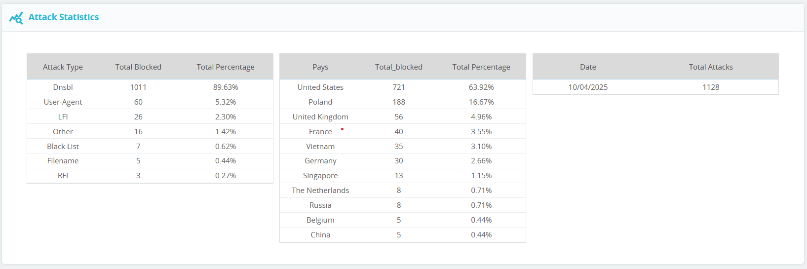
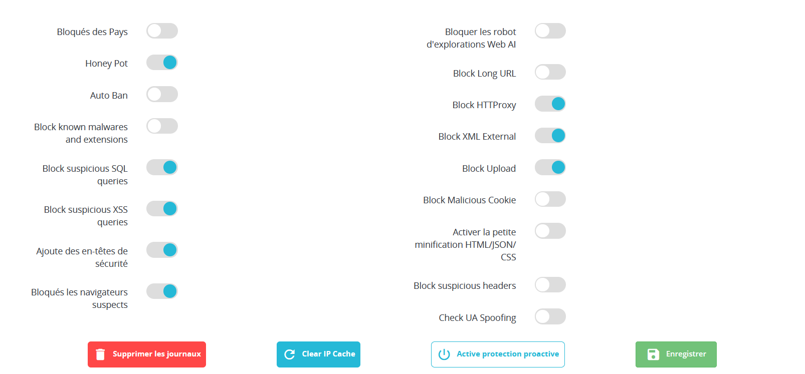
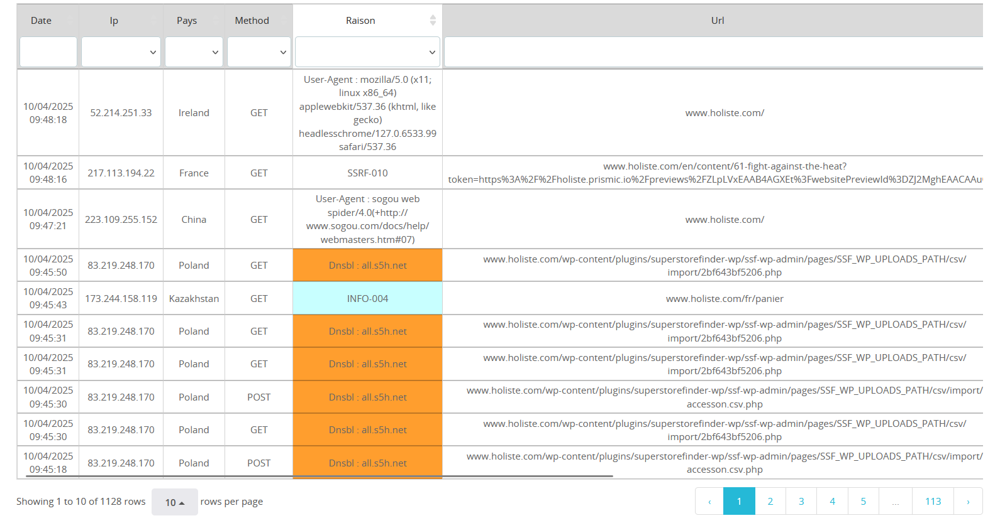
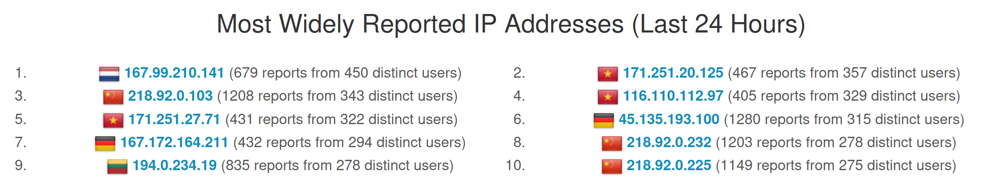

Interview avec PERDREAU Arthur
Étudiant à l'École Supérieure du Digital
Bachelor Développeur Web
Publié le 12 mai 2025
Q : Pouvez-vous nous parler de Phenix-Info ?
Bien sûr ! Phenix-Info est une agence web spécialisée dans la création de sites internet, le développement web, le référencement, l'infogérance serveur, le design graphique ainsi que les logiciels de gestion. Leurs locaux se trouvent au 19 Rue de Prony à Villefranche-sur-Saône. Il y a 5 personnes dans cette entreprise. La première personne est Damien Bellegueulle, le directeur de cette agence. Ensuite, il y a Arthur Boucher qui développe les sites, Sébastien Chenal qui s'occupe du web design et enfin Samuel et Alexandre Monange, des associés.

Q : Quelles ont été tes missions lors de ton stage ?
Mon stage de deux mois s’est déroulé du 24 février au 11 avril 2025. À mon arrivée, j’ai dû installer certains outils pour commencer à travailler. Le premier outil à installer a été PrestaShop.
Q : Qu’est-ce que PrestaShop ?
PrestaShop est une plateforme open-source de création de boutiques en ligne, aussi appelée CMS. Elle permet de gérer facilement les produits, les commandes, les paiements et les expéditions. Grâce à PrestaShop, les responsables de boutique peuvent gérer leur site sans connaissances techniques en code.
Q : Et quelle a été ta première mission sur PrestaShop ?
Il faut d'abord savoir que tout site peut être sujet à une attaque malveillante. Or, le code source de PrestaShop n’intègre pas nativement de mesures de sécurité avancées. Pour pallier cela, Damien a conçu un module de sécurité. Ma première mission a donc été d’améliorer ce module, notamment son aspect visuel. J’ai refait le CSS du module DNSBL en utilisant Bootstrap 4.0 et du CSS de base, en conservant la charte graphique de PrestaShop, notamment le bleu comme couleur principale.
J’ai aussi remplacé les icônes existants par des icônes plus intuitives pour améliorer la navigation. De plus, j’ai corrigé les problèmes d’alignement des éléments.
Le module DNSBL catégorise toutes les attaques détectées sur le site. Pour simplifier leur lecture, j’ai introduit un système de couleurs : par exemple, les attaques de type injection SQL sont affichées en rouge. Cette mission m’a permis de comprendre l’impact du design sur la lisibilité et l’efficacité, et combien l’usage de couleurs et d’icônes peut accélérer la compréhension.
  Q : Cela montre bien l’importance de l’environnement de travail. Et comment fonctionne ce module ?
Le module s'appelle DNSBL. Il vérifie chaque requête émise sur le site PrestaShop. Il est chargé avant le site grâce à un preloader. Ensuite, à chaque requête, il vérifie d’abord si l’utilisateur provient d’un pays figurant dans une liste noire. Si c’est le cas, l’accès est bloqué afin d’améliorer les performances et la sécurité.
Q : Qu’entendez-vous par “bloqué”, et pourquoi existe-t-il une liste noire de pays ?
Par "bloqué", j’entends que l’utilisateur ne pourra plus accéder au site. Concernant la liste noire, il faut savoir que la majorité des attaques proviennent de certains pays. Bloquer automatiquement ces pays permet de réduire significativement les risques.
Q : Ok, mais si la personne souhaitant attaquer ne se trouve pas dans un pays figurant sur la liste noire ?
C’est là que le reste du module entre en jeu. Lorsqu’un client envoie une requête, le module vérifie d’abord si le corps de la requête contient du JSON ou du XML, qui peuvent être utilisés à des fins malveillantes. Ensuite, d’autres types d’attaques sont détectés comme les injections SQL ou autres.
Mon travail a été de bloquer les attaques SQL. Ces attaques permettent aux hackers d’insérer du code malveillant dans des requêtes SQL pour manipuler une base de données. Pour les bloquer, nous avons utilisé des expressions régulières, qui permettent d’identifier certains motifs dans les URL ou les corps des requêtes.
Q : Est-ce que vous avez un exemple de regex ?
Oui. Par exemple, la regex /\b(select|update)\b\s+(?=(from|set|where|join|into|values|prepare))/i permet de détecter les requêtes SQL contenant SELECT ou UPDATE suivis immédiatement de mots-clés SQL comme FROM, SET ou WHERE.
Q : Pouvez-vous m’expliquer comment est construite cette regex ?
Bien sûr. L’expression commence et se termine par des /, ce qui est la syntaxe standard. Le i à la fin indique que la recherche ne tient pas compte de la casse, donc elle reconnaîtra un select tout en majuscules, tout en minuscules ou même à moitié majuscules et moitié minuscules. Le \b représente une limite de mot, cela permet de ne détecter que les mots entiers. \s+ signifie qu’il doit y avoir au moins un espace après SELECT ou UPDATE. Enfin, (?= ) est une anticipation pour vérifier qu’un mot-clé comme FROM suit immédiatement.

Q : Et que se passe-t-il si une attaque est détectée ?
C’est simple, l’utilisateur est immédiatement bloqué. Si cette personne tente plus de 10 attaques en moins de 5 minutes, elle est bannie du site.
Q : Intéressant. Quelles ont été tes autres missions ?
En plus du module DNSBL, j’ai aussi travaillé à la détection et au blocage des attaques XSS. Une attaque XSS permet à un pirate d’exécuter du code JavaScript malveillant dans le navigateur d’un utilisateur. J’ai utilisé des expressions régulières pour détecter ce type de code dans les formulaires ou les contenus. Cela m’a permis de maîtriser les regex, un outil très utile pour valider des formulaires, extraire des données ou rechercher des motifs complexes.

Q : Ah oui, c’est très utile les regex. As-tu fait autre chose concernant la sécurité ?
Oui, bien sûr ! Sur certains sites web, il est possible d’uploader des fichiers, mais certains fichiers peuvent cacher du code malveillant. J’ai donc développé une fonction de vérification des fichiers uploadés.


Cette fonction commence par vérifier qu’au moins un fichier a bien été uploadé. Ensuite, elle vérifie si le fichier a été transféré correctement. Si une erreur est détectée, le fichier est ignoré.
Elle récupère ensuite des informations comme le nom, la taille, le chemin temporaire, et l’extension du fichier. Seuls certains types de fichiers sont autorisés : images, PDF, Word, Excel ou CSV.
Le type MIME réel du fichier est vérifié via la bibliothèque PHP finfo et la commande système file pour détecter les fichiers déguisés.
Ensuite, le contenu du fichier est scanné pour détecter du code PHP caché, notamment dans les fichiers polyglottes comme des images contenant du code. Les fichiers sont lus en texte et en hexadécimal.
Les SVG sont encore plus strictement contrôlés, car ils peuvent contenir du JavaScript ou des entités XML dangereuses. La fonction recherche des balises <script>, des attributs comme onload, ou des entités XML risquées.
Enfin, si le fichier dépasse 16 Mo, il est bloqué pour éviter toute surcharge mémoire. Si un problème est détecté, la fonction renvoie un objet d’erreur. Sinon, elle retourne null, ce qui signifie que le fichier est sûr.
Q : Ah oui, cette fonction vérifie beaucoup de points de sécurité. Avez-vous fait autre chose pendant votre stage concernant la sécurité ?
Non, mon travail sur la sécurité des sites web s'est arrêté ici.
Cependant, j'ai eu à concevoir un script PHP pour lire un fichier CSV, décoder et nettoyer les données en base64 de la colonne PAYLOAD_TEXT_OR_BASE64, puis enregistrer le résultat dans un nouveau fichier CSV.
En fait, Phenix-Info passe régulièrement des tests de sécurité sur le module DNSBL pour pouvoir voir les failles de sécurité à combler. Les tests sur le module sont effectués par Vincent Guesnard de TouchWeb.
À chaque fin de batterie de tests, on reçoit un fichier CSV avec le détail des attaques qui sont passées et qui pourraient engendrer des dégâts sur un site.
De ce fait, certaines requêtes malveillantes avaient un body, mais ce body était encodé en base64. C'est là qu'intervient mon script !
Ce script PHP a pour but de lire ce fichier CSV, décoder et nettoyer les données en base64 de la colonne PAYLOAD_TEXT_OR_BASE64, puis d'enregistrer le résultat dans un nouveau fichier CSV.
Après le décodage, cela permet de voir les attaques qui sont passées et d'essayer de les bloquer en ajoutant des mesures de sécurité.


Q : Pour finir, comment pouriez-vous résumer votre expérience ?
J'ai trouvé ce stage très enrichissant, notamment en ce qui concerne la sécurité des sites web. En effet, j'ai beaucoup appris sur la manière dont les hackers peuvent compromettre l'intégrité des sites, et surtout comment contrer ces actions. J'ai également énormément appris sur la vie en entreprise, le contact avec les clients ainsi que sur la gestion des projets. De plus, ce stage était étroitement lié à ma formation car j'ai pris conscience que lorsque que je développe des sites web, il y a bien plus que l'aspect visuel et pratique car en effet il y a l'aspect sécuritaire. Pour finir, j'ai surtout amélioré ma manière et ma vision de coder, car il fallait toujours optimiser le code pour le rendre plus performant, mais également plus compréhensible.
© 2025 Interview Magazine